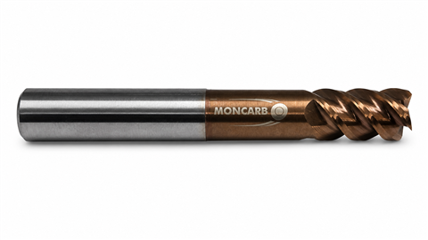

← Köşe Radüslü
Ağır Kaba Talaş Radüslü
Üreticiden ağır kaba talaş radüslü — stoktan aynı gün kargo, aynı üründen 10+ adette dip fiyat.
KaplamaTSH — 55 HRC sınıfı
Kullanım alanı55 HRC sertliğe kadar
Çap toleransı (D1)0 / −0,02 mm
Şaft toleransı (D2)h6
KarbürMikro tane (ultra-fine)
MenşeiTürkiye — kendi üretimimiz
🚚 Aynı gün kargo
💵 Kapıda ödeme
↩ 14 gün iade
| ⌀ Çap | Boy | R | 10+ Adet | 5-9 Adet | 1-4 Adet | Sipariş |
|---|---|---|---|---|---|---|
| 4 | 50 | R4 | 13,49 $ | 14,26 $ | 15,33 $ | |
| 4 | 75 | R0,5 | 15,60 $ | 16,49 $ | 17,73 $ | |
| 4 | 75 | R1,0 | 15,60 $ | 16,49 $ | 17,73 $ | |
| 5 | 50 | R5 | 15,39 $ | 16,26 $ | 17,49 $ | |
| 6 | 55 | R6 | 18,73 $ | 19,79 $ | 21,28 $ | |
| 6 | 75 | R0,5 | 22,32 $ | 23,59 $ | 25,36 $ | |
| 6 | 75 | R1,0 | 22,32 $ | 23,59 $ | 25,36 $ | |
| 6 | 100 | R0,5 | 27,52 $ | 29,08 $ | 31,27 $ | |
| 6 | 100 | R1,0 | 27,52 $ | 29,08 $ | 31,27 $ | |
| 8 | 64 | R8 | 25,52 $ | 26,97 $ | 29,00 $ | |
| 8 | 75 | R0,5 | 29,51 $ | 31,19 $ | 33,53 $ | |
| 8 | 75 | R1,0 | 29,51 $ | 31,19 $ | 33,53 $ | |
| 8 | 100 | R0,5 | 34,63 $ | 36,60 $ | 39,35 $ | |
| 8 | 100 | R1,0 | 34,63 $ | 36,60 $ | 39,35 $ | |
| 10 | 73 | R10 | 35,85 $ | 37,89 $ | 40,74 $ | |
| 10 | 100 | R0,5 | 45,55 $ | 48,14 $ | 51,76 $ | |
| 10 | 100 | R1,0 | 45,55 $ | 48,14 $ | 51,76 $ | |
| 12 | 83 | R12 | 51,21 $ | 54,12 $ | 58,19 $ | |
| 12 | 100 | R0,5 | 61,36 $ | 64,85 $ | 69,73 $ | |
| 12 | 100 | R1,0 | 61,36 $ | 64,85 $ | 69,73 $ | |
| 452 | — | R4 | 29,97 $ | 31,67 $ | 34,06 $ | |
| 452 | — | R6 | 29,97 $ | 31,67 $ | 34,06 $ | |
| 452 | — | R8 | 29,97 $ | 31,67 $ | 34,06 $ | |
| 452 | — | R10 | 29,97 $ | 31,67 $ | 34,06 $ | |
| 452 | — | R12 | 29,97 $ | 31,67 $ | 34,06 $ |